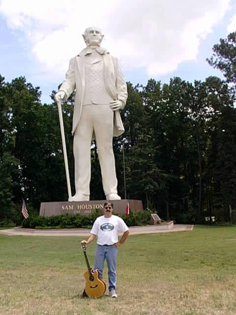
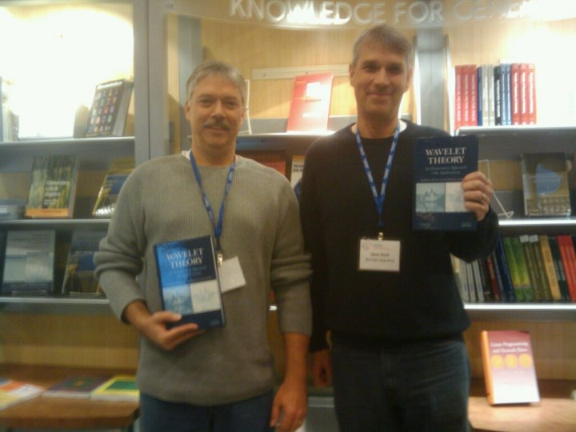
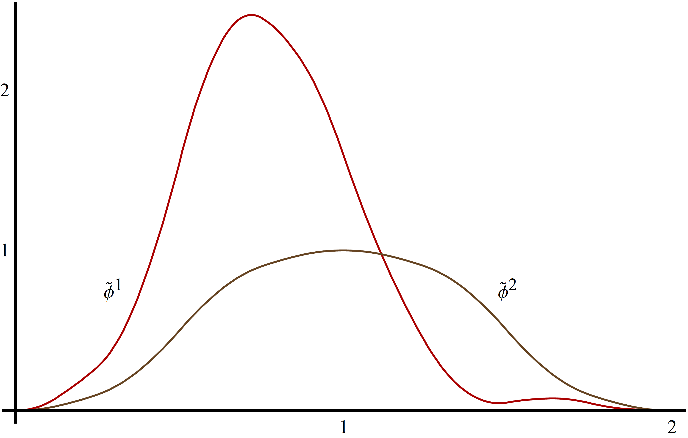
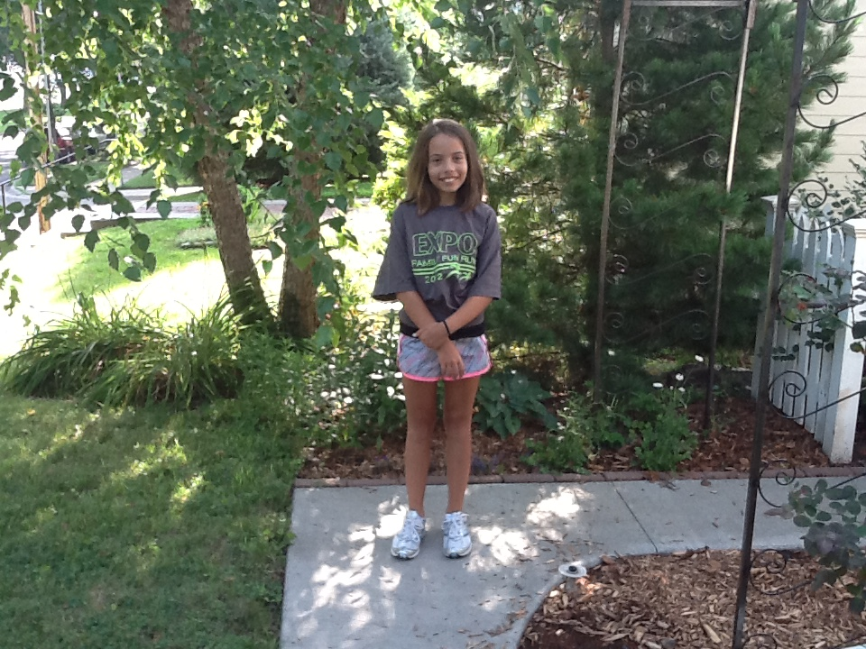
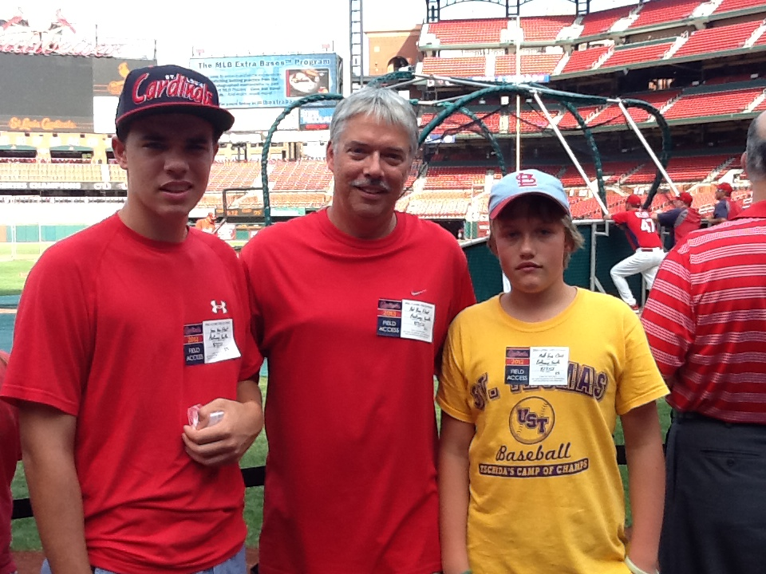

Background
Until 1991 ...

I was raised about 20 miles west of Peoria, IL in Farmington, IL (pop. 2378). I earned a Bachelors of Science degree at Western Illinois University and my Masters of Science and PhD at Southern Illinois University. At WIU, I played on the tennis team. At SIU I did my doctoral work under the direction of Edward Neuman and my master's work under the direction of David Kammler. Every graduate student should be as fortunate as me to have two such outstanding mathematicians as role models.
Employment
  I spent 1991-1992 as a postdoc at Vanderbilt University in Nashville, TN. In 1992, I moved to Huntsville, TX and worked for six years at Sam Houston State University. During my time at SHSU, I was fortunate to work with four mathematicians - Peter Massopust, David Ruch, Wasin So, and Jianzhong Wang - as part of a research group in (multi)wavelets. We received National Science Foundation funding for research in multiwavelets and Wasin and I also worked on a grant from the Strategic Environmental Research and Development Program (SERDP). This agency does environmental research for the Department of Defense.
{kind=link}
{kind=link}
In 1998, I accepted the endowed position as Director of the Center for Applied Mathematics in the Mathematics Department at the University of St. Thomas in St. Paul, MN. In June 2011, I became chair of the Department of Mathematics.
Research Interests
 My main research interests are in the areas of (multi)wavelets and spline theory. I have written three books on wavelets - the most recent is a second edition of the first book. In the area of spline theory, Peter Massopust and I are working on a generalization of hexagonal bivariate non-polynomial splines. David Ruch and I have just published a paper on the construction of nonnegative scaling vectors on the interval. The method requires the construction of fewer edge functions than expected for certain cases, but we cannot prove this claim. Please visit my vita page to see my research papers on wavelets and other areas and check out the wavelets page to learn about my books or to download Mathematica and MATLAB software for working with wavelets.
{kind=link}
Family and Spare Time
  I am married to Verena Van Fleet-Stalder. She is a microbiologist from Switzerland who currently works as a Professor at Northwestern Health Sciences University. We have three children - Sam (24), Matt (21), and Rachel (17). I have coached several of Sam's and Matt's baseball teams over the years as well as Rachel's high school tennis team. I play a lot of USTA League tennis and Verena and I play music gigs around town several times a year. I am also a huge St. Louis Cardinals baseball fan.
{kind=link}
{kind=link}
Math Nerd Fact
My Erdös number is 3 (Wang, Chui, Erdös). To compute yours, go here.